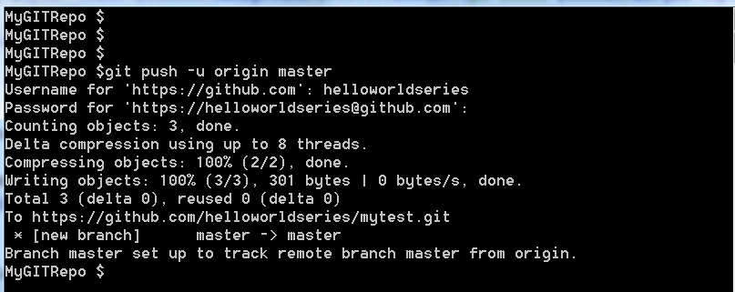

Multiple ways to push a file into git repository
In layman's terms git push is similar to SVN commit . git commit is different, we will cover that also.
Git allows three ways to push a file using -
- Command line (
bash terminalor any other client) git gui(or any other gui client) - will cover in some other tutotial- Drag-n-drop to
Github repository- will cover in some other tutotial.
Let's use bash terminal to push a file.
-
Open bash terminal.

-
Navigate to
C:\MyGITRepo\.(This directory was created in How to init git repo).cd C:\MyGITRepo
-
Use your favorite editor to create a file i.e. helloworldseries.txt and save into
C:\MyGITRepo\. -
Switch to bash terminal and execute command to add a file.
git add helloworld.txt
-
Now commit this file using
git commit, this is different fromSVN commit.SVN commitchecks-in the file into SVN repo however,git commitchecks-in the file into local git repo only.To check-in into central git repo (
https://github.com/helloworldseries/mytest.git), we will usegit push, that we will see in a moment.git commit helloworld.txt -m "commit message"
-
Still we have not connected to network and all the git operations were done on local machine (local git repo)
Let's connect to internet and add central git repo (
https://github.com/helloworldseries/mytest.git) as remote into your local git repo, so that everytime, git client would automaticall connect to this remote.git remote add origin <github-repo-https-url>
Replace
<github-repo-https-url>in above command with your github repo HTTPS url. i.e. I need to usehttps://github.com/helloworldseries/mytest.git.So the final command would be..
git remote add origin https://github.com/helloworldseries/mytest.git
-
Before we can push our file, let's find out what is the remote name, we have just added(default will be
origin). This remote name will be used in push command.Let's push all the changes to remote repo, which are commited (in our case one file i.e. helloworld.txt).
git remote -
As our bash terminal already knows about git remote repo, so we are good to talk to remote repo.
Command to push the file(s) -
git push <remote-name> <branch-name>
Replace
<remote-name>withoriginand<branch-name>withmaster.We are using
masterbranch for all operations. In real life, you would probably use some other branch name and not master.So the final command would be..
git push -u origin master-uwill prompt for your github userid and password. After successful authentication, all files in committed state in local repo will be pushed to remote tepo.
-
Let's verify our changes in Our Github repository.
Next click on the file - helloworld.txt and check the content.

-
If you have reached to this step, it means that you have successfully pushed your first file into github repository.
It's not a time to relax. Let's move on to next tutorial and see how to modify and push the file back to github repo.
-
Before we move on to next tutorial, let's summarize all the commands used in this tutorial.
cd C:\MyGITRepo git add helloworld.txt git commit helloworld.txt -m "commit message" git remote add origin https://github.com/helloworldseries/mytest.git git remote git push -u origin master